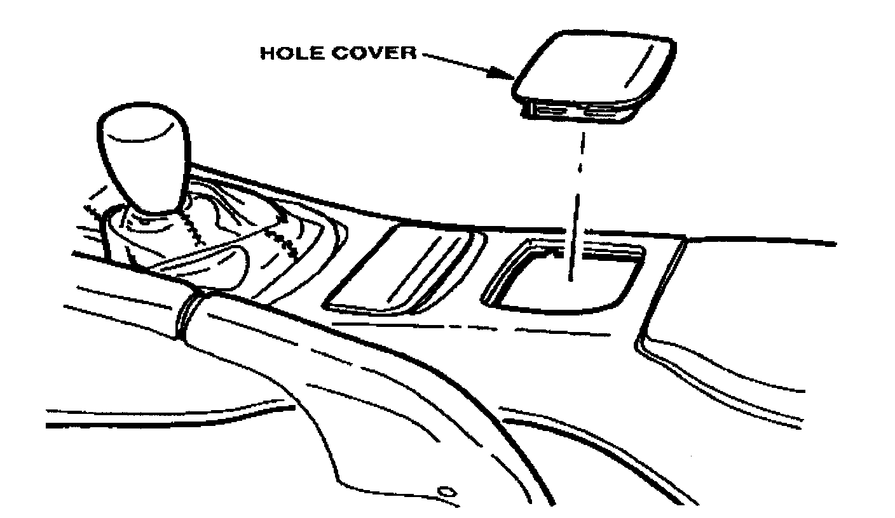
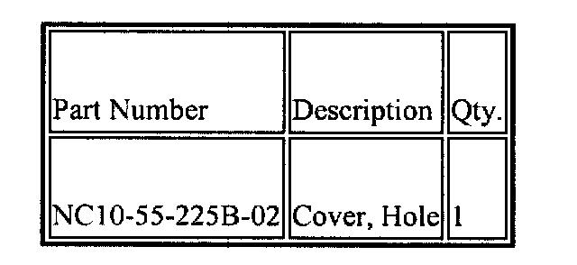
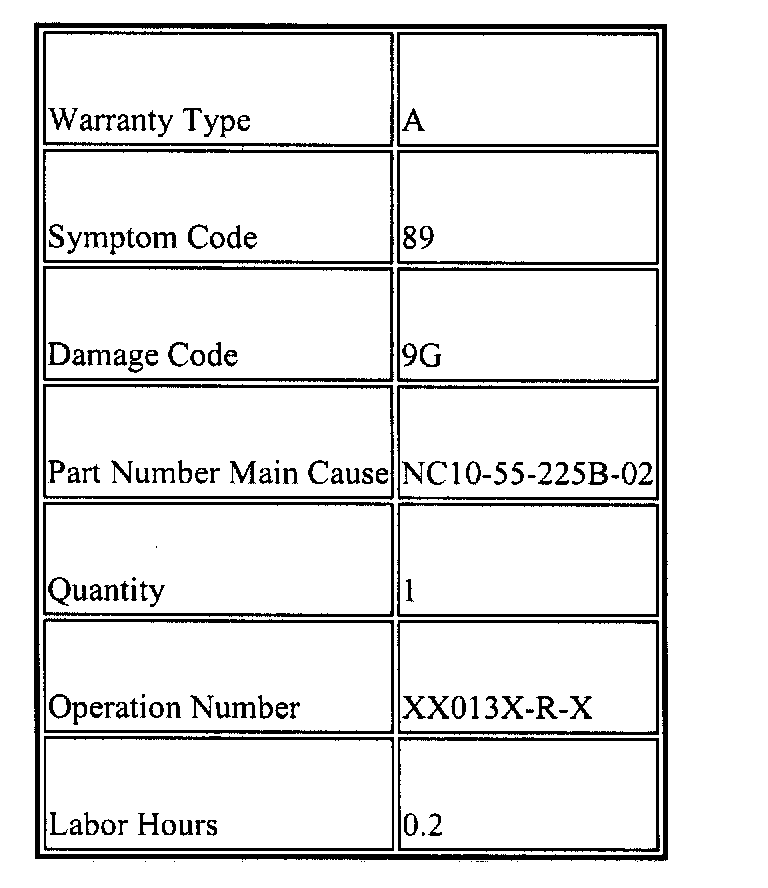

Interior - Console Hole Doesn't Fit Flush
S013/98CONSOLE HOLE COVER DOES NOT FIT FLUSH
APPLICABLE MODELS
1999 Miatas without power windows having VINs/manufacturer dates lower than JM1 NB353 * X0 111110 / March 12, 1998.
DESCRIPTION

The hole cover used in place of the power window switches does not fit flush with the console surface.
REPAIR PROCEDURE
1. Verify customer complaint
2. Remove the existing hole cover. Refer to section 9 of the Workshop Manual.
3. Install a new hole cover by aligning the cover tabs with the hole and pressing into place until click is heard.
NOTE:
Be sure to evenly press the four corners of the cover at the same time.
4. Verify the repair.

PARTS INFORMATION
WARRANTY INFORMATION

NOTE:
This information applies to verified customer complaints on vehicles covered under normal warranty. Refer to the SRT microfiche for warranty term information.

Disclaimer